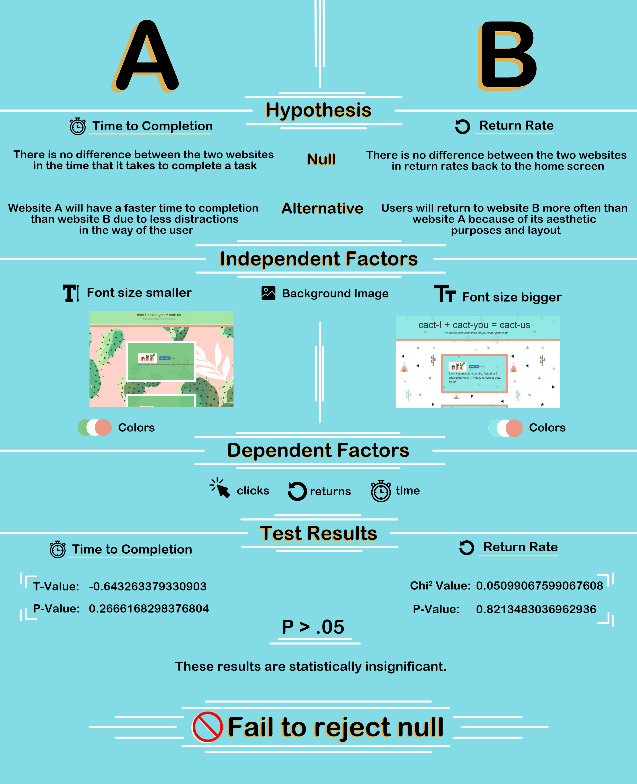
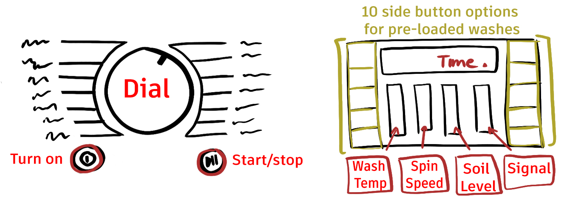
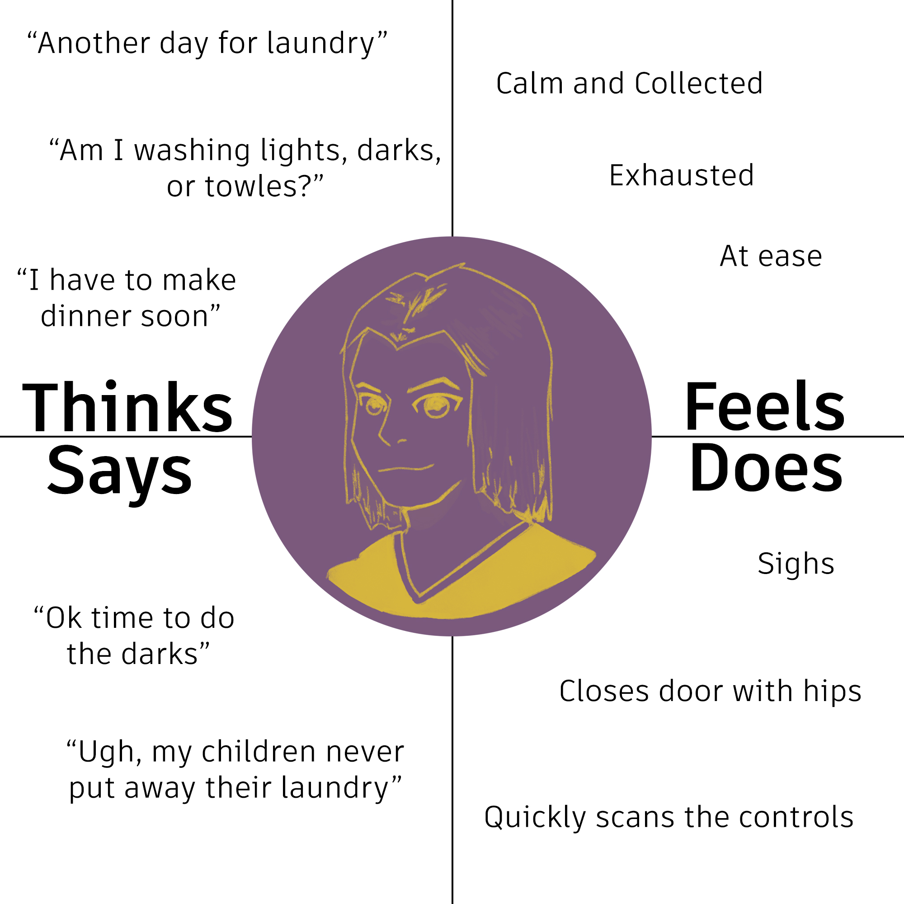
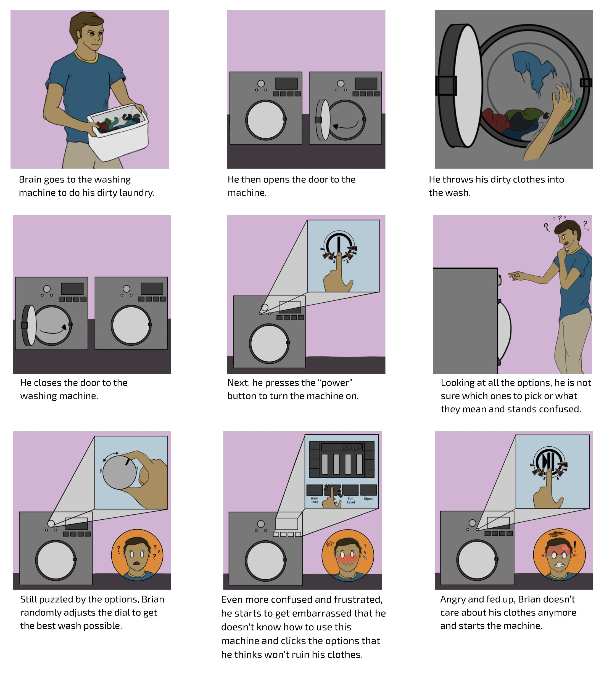

During my sophomore fall semester at Brown, my UI/UX class assigned us a project that would better help us
understand AB testing, its applications, and then implementing it into our own websites. We then had to make two
webpages that differentiated between user interfaces to see the statistical difference between both.
Before I ran my program, I had first make two null and two alternative hypotheses: 1. Time to
Completion, and 2. Return Rate.
Null
There is no difference between the two websites in the time that it takes to complete a task
There is no difference between the two websites in return rates back to the home screen
Alternative
Website A will have a faster time to completion than website B because it is more minimalistic and there are
less distractions in the way of the user
Users will return to website B more often than website A because of its aesthetic purposes and layout
Implementation
First, I created two different interfaces that varied in presentation but had an interface close enough to
compare to each other. Then, 25 classmates acted as users and randomly accessed either design A or B. Their task
was to purchase $150 worth of cacti and to checkout. The user information was then recorded and stored.
Infographic

After calculating the T and Chi Squared values, using both p values, it statistically determined that the
hypothesis is insignificant. This means that there is doubt that the alternative hypotheses will repeat itself
in other trials. As a result, the null might be correct since there isn't enough poof that the alternate
hypotheses are true.
Takeaways
Although the the results reflected in this project are from statistics of 25 users, this sample space was
limited to my fellow students and had a limit to the amount of people able to access the webpages. The results
of this project shows how AB testing helps developers gain a better insight on their own designs from real
user's data. Sometimes it is better to make your website more accessible than interactive. Clearer and
straightforward minimalistic designs help users navigate quicker and simple aesthetics make them want to come
back.
=======
Personas and Storyboards
Personas and Storyboards
Context
During my sophomore fall semester at Brown, my UI/UX class assigned us a project that made us pick an interface that
was accessible but flawed. Using the users feedback, we then had to make personas and storyboards centered around the
users and their experiences. By doing so, it creates a better understanding of the users and their own
Due to Covid, interface selection was limited and therefore users were based on my family members within my
household. As a result, I chose my family's washing machine
Today's interface: Washing machine

This interface lets the user choose what type of wash they want their clothes to have. Each wash cycle can be
extremely specific: you can change the spin speed, temperature, or the amount of water. It then takes the inputs
and customizes the wash for your clothes.
Research
Observations
All users took time to read the labels for the dial, although varying from skimming to taking a moment to read all of
them, and all took brief moments to step back to look at the machine as a whole. Furthermore, most users paused at the
control panel and hesitated while inputting the setting using the buttons.
First time users became increasingly frustrated as they kept reading the additional options and buttons, while users
who have experienced the machine were less affected by the options and skimmed through them quickly. Some common
phrases heard from users was: “What does this mean?”, “ummmm”, and “am I doing this right?”.
Interview Questions:
Did the variety of selection tools, i.e the dial and buttons, help you understand how to use this machine?
Did these tools help clarify what options you needed to pick?
Was there a clear understanding of the steps you needed to take?
Was the amount of options overwhelming in any way? Why?
Did you know what each option did?
What was a major challenge that you experienced while using the machine? Why?
Did each label for each function make the process easier or more difficult?
Most users found that although there were a plethora of tools and buttons available, the main issue with the overall
interface was how confusing and how little information it provided about the influence each option had on the wash for
clothes. Furthermore, the differences in tools to pick the options was confusing, especially for the control panel;
users didn’t know how to control the main 4 buttons and had no understanding of the 8 side options at all. In fact,
even the most advanced user didn’t understand all the buttons and options on the dial.
Although some of the labels helped with choosing the type of wash for each fabric, there were just too many sub-options
for each label which made them less clear and confusing. Using these questions, I recorded answers from different
users: one who uses the machine on a weekly basis, one who is familiar with the machine but rarely uses it, and one who
has seen the machine once or twice. Because of this, I feel as if the varying opinions are fairly well balanced;
however, there is bias due to the fact that all users have previously seen the machine before.
Personas
Empathy Map: Working Wendy

The user is a mother of 4 children who uses the washing machine on a regular basis. They are used to the options
and therefore rarely get frustrated; they know the exact button to use for each type of clothes and which to avoid
entirely.
This mother admitted that although she knows which options to choose for certain clothes, there are just way too
many and most remain unused. In fact, she states that even she doesn’t know what most of the functions do and will
stick to the options that are understood easier.
This mother represents the users that are familiar to the machine and its options yet still confused about the
excessive options and their functions. However, these users still accept that they will never understand and
proceed to do their daily jobs.
Empathy Map: Working Bewildered Brian
This user is a new college grad coming back from school. The user is not new to the washing machine but is rather
unfamiliar with all of its components and the model itself. They are unsure of each button pressed and the
consequences/outcomes of each option.
the user is a fairly new user puzzled by the machine and its options. He is unsure about almost all his decisions
and questions if he has inputted the correct options for his wash. In the end, he gets increasingly frustrated with
his confusion which pushes him to give up.
This user represents the users unfamiliar with the functions of the machine and its choices. As a result, the users
will typically walk away in frustration or start the machine to end the confusion.
Storyboard
Bewildered Brian

Takeaways
From this project, I have learned that over-complicating interfaces with every option can confuse users and distract
them from their initial task. Interfaces should be a streamlined design that helps the user quickly access information
without confusion from a quick scan. Additionally, I have learned how to effectively collect data and turn it into
useful information about the users and their interactions with interfaces.